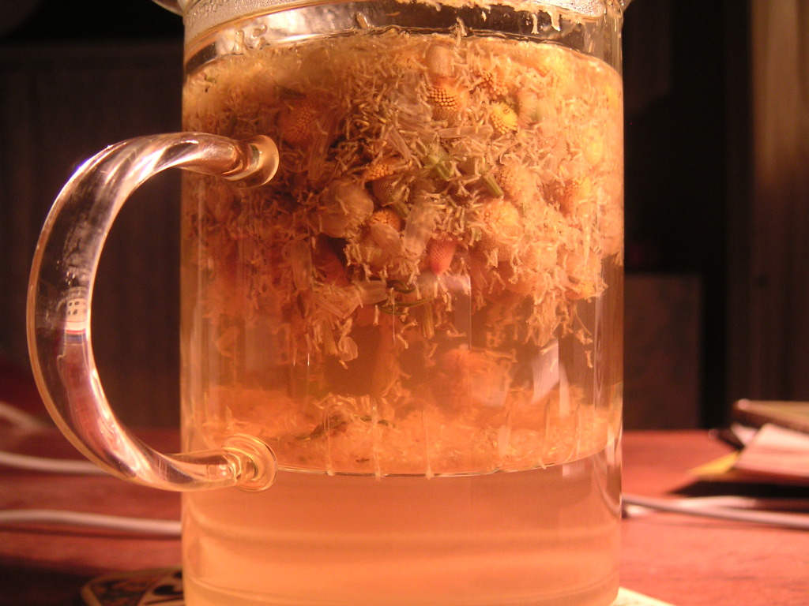

Cikk · Kamilla
Kamilla és alvás: a teát megihatod, az álmatlanságot nem ez oldja meg
Ősszel sokan esténként egy bögre kamillateával próbálnak lecsendesedni. Megnéztem, mit tudunk arról, hogy tényleg segít-e elaludni. A rövid válasz az, hogy a tea ártalmatlan és kellemes, de az álmatlanságra szinte nincs bizonyíték.

Egy régi gyógynövény a bögrében
A kamillát már az ókori Kínában, Egyiptomban, Görögországban és Rómában is használták. Ma megfázásra, emésztési panaszra, szorongásra, álmatlanságra és még sok minden másra ajánlják. Két fajtája van, a római és a német kamilla. A NIH lapja és ez az írás is a német kamilláról szól.
Végigolvastam az amerikai NIH komplementer és integratív egészségügyi központjának (NCCIH) kamilláról szóló lapját, amelyet 2024 novemberében frissítettek.
Mit mond a NIH az alvásról?
Amit a lap ír Arról, hogy a kamilla hogyan hat az álmatlanságra, nagyon kevés az adat. Egy 2019-es áttekintés mindössze egy álmatlansági vizsgálatot talált, és az nem mutatott ki hasznot.
Ez az egy vizsgálat amerikai volt, és kicsi: 34 felnőtt vett részt benne, akiknek legalább fél éve tartó álmatlanságuk volt. Négy hétig naponta kétszer kaptak kamillakivonatot vagy placebót. Az alvásnaplóban nem volt érdemi különbség a két csoport között, se az alvás hosszában, se az elalvás idejében, se az éjszakai ébredések számában.
Amit hozzátesz Néhány előzetes vizsgálat szerint a kamilla talán segíthet a tartós, általános szorongásban és a vele járó lehangoltságban. Ez még nem erős bizonyíték, és nem az alvásról szól.
Amire figyelj
A teában és ételekben szokásos mennyiségben a kamilla valószínűleg biztonságos. Mellékhatás ritkán van, például hányinger, szédülés vagy allergiás reakció, ami néhány embernél akár súlyos is lehet. Ha allergiás vagy a parlagfűre, a krizantémra, a körömvirágra vagy a százszorszépre, a kamillára is könnyebben érzékeny lehetsz.
Ha gyógyszert szedsz, különösen véralvadásgátlót, például warfarint, vagy nyugtatót, szólj az orvosodnak, mielőtt kivonatot kezdesz. A lap szerint a kamilla előzetes adatok alapján gyengítheti a fogamzásgátló tabletta hatását, és ösztrogénszerű hatása miatt óvatosság kell ösztrogénérzékeny betegségnél. Terhesség és szoptatás alatti biztonságáról keveset tudunk.
Szerintem az esti kamillatea jó szokás lehet, ha neked megnyugtató rituálé. Ha viszont hetek óta rosszul alszol, ne a teától várd a megoldást, hanem beszélj róla az orvosoddal.
Források
- National Center for Complementary and Integrative Health, NIH. Chamomile. Frissítve: 2024. november. https://www.nccih.nih.gov/health/chamomile
- Zick SM, Wright BD, Sen A, Arnedt JT. Preliminary examination of the efficacy and safety of a standardized chamomile extract for chronic primary insomnia: a randomized placebo-controlled pilot study. BMC Complement Altern Med. 2011;11:78. PubMed 21939549
- Kazemi A, Shojaei-Zarghani S, Eskandarzadeh P, Hashempur MH. Effects of chamomile (Matricaria chamomilla L.) on sleep: a systematic review and meta-analysis of clinical trials. Complement Ther Med. 2024;84:103071. https://doi.org/10.1016/j.ctim.2024.103071 · PubMed 39106912